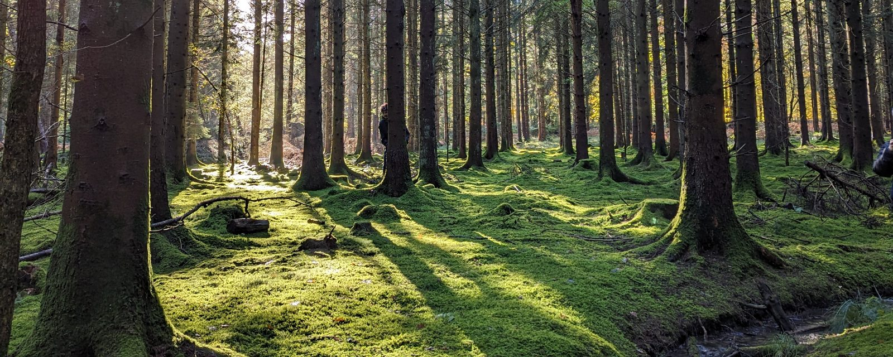

whimsee
live on ios + android
- why
- i wanted an app that sends you outside instead of keeping you in. you hide a small note where you stand. only someone who walks there can read it. no feed, no algorithms, no infinite anything.
- distinguishing marks
- postgis decides whether you're actually there. row level security keeps every note dark until you are. edge functions do the rest.
- diet
- expo / react native · next.js on cloudflare workers · supabase · posthog
- habitat
- wherever you happen to be standing.